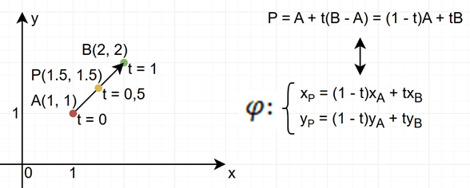
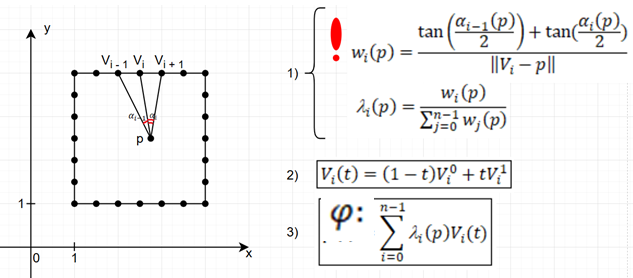
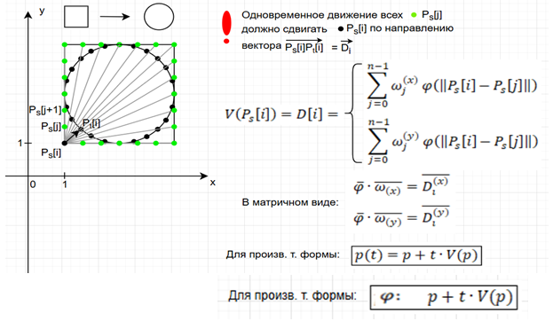

Содержание
Введение
Область технических и естественных наук, занимающаяся обработкой графической информации с помощью компьютера, получила название компьютерной графики. Автоматизация проектирования, визуализация научных результатов и аналитических данных, обработка изображений, создание компьютерных игр и анимации – основные задачи, решаемые в данной области [1]. Для создания анимации используются разные подходы. Все они требуют работы с геометрическими объектами разной топологии и формы. К таким подходам относится морфинг, преобразующий геометрические формы.
Таким образом, проблема исследования заключается в отсутствии практических рекомендаций по выбору алгоритма морфинга для фигур с разной топологией.
Целью курсового проекта является проведение сравнительного анализа современных алгоритмов морфинга полигонов, выявление области их применимости.
Для достижения цели необходимо решить следующие задачи.
- Выполнить анализ предметной области.
- Реализовать алгоритмы морфинга.
- Протестировать алгоритмы на практике.
- Провести сравнительный анализ алгоритмов.
- Сделать выводы.
Алгоритмы морфинга полигональных форм
- Линейная интерполяция

- Барицентрические координаты

- Векторное поле

Эксперимент
Результаты
| Критерий | Форма преобразования | |||||||||||
|---|---|---|---|---|---|---|---|---|---|---|---|---|
| Выпуклый - выпуклый | Выпуклый - вогнутый | Выпуклый - сложная топология | Вогнутый - сложная топология | |||||||||
| квадрат - круг | круг - звезда | треугольник - медуза | звезда - медуза | |||||||||
| Лин. интерпол | MVC | Вект. поле | Лин. интерпол | MVC | Вект. поле | Лин. интерпол | MVC | Вект. поле | Лин. интерпол | MVC | Вект. поле | |
| 1. Время выполнения преобразования | 1.66 | 1.75 | 3.29 | 1.60 | 1.72 | 3.26 | 1.67 | 1.73 | 3.27 | 1.67 | 1.77 | 3.31 |
| 2. Среднеквадратическое отклонение точек от прямой | 0.00 | 17.32 | 19.34 | 0.00 | 2.99 | 3.47 | 0.00 | 16.08 | 16.70 | 0.00 | 12.82 | 14.44 |
| 3. Коэффициент корреляции движения граничных и внутренних точек | 0.00 | 0.97 | 0.97 | -0.08 | 0.71 | 0.79 | 0.10 | 0.88 | 0.91 | 0.22 | 0.91 | 0.96 |
| 4. Коэффициент сохранения формы | 0.43 | 0.05 | 0.06 | 0.45 | 0.08 | 0.09 | 0.43 | 0.12 | 0.13 | 0.41 | 0.11 | 0.13 |
| 5. Количество самопересечений | 98.00 | 0.00 | 0.00 | 100.00 | 100.00 | 100.00 | 100.00 | 100.00 | 100.00 | 100.00 | 100.00 | 100.00 |
Заключение
Для фигур с достаточно тривиальной топологией, в частности рамок, контуров, обводок, лучше всего использовать алгоритм линейной интерполяции.
В случае, когда фигура представляет не просто полигон, а целую полигональною форму, включающую полигон и внутреннюю область полигона, следует применять алгоритм на основе обобщенных барицентрических координат типа MVC.
Универсальным выбором будет алгоритм морфинга на основе векторных полей, который обеспечивает гладкость деформации.
Библиографический список
- B. Sobota Introductory Chapter: Computer and Imaging // Computer Graphics and Imaging / ed. B. Sobota. – London: IntechOpen, 2019. – P. 1-14.
- C. Rossl, Z. Karni, H. P. Seidel, R. Zayer Vector Field Based Shape Deformations // Computer Graphics Forum. – 2013. – Vol. 32, No. 1. – P. 1-10.
- D. Chen, Y. Sun Boundary Based Parametric Polygon Morphing // IEICE Transactions on Information and Systems. – 2001. – Vol. E84-D, No. 4. – P. 511-520
- F. P. Preparata, M. I. Shamos Computational Geometry: An Introduction. – New York: Springer-Verlag, 1985. – XIV, 398 p. – (Texts and Monographs in Computer Science).
- H. Ilhan, H. Gurcay Polygon Morphing and Its Application in Orebody Modeling // Mathematical Problems in Engineering. – 2012. – Vol. 2012. – Article ID 732365. – P. 1-9.
- K. Hormann, N. Sukumar F Generalized Barycentric Coordinates in Computer Graphics and Computational Mechanics / ed. by K. Hormann, N. Sukumar. – Boca Raton: CRC Press, 2017. – XIV, 338 p. – ISBN 978-1-4987-6359-2.